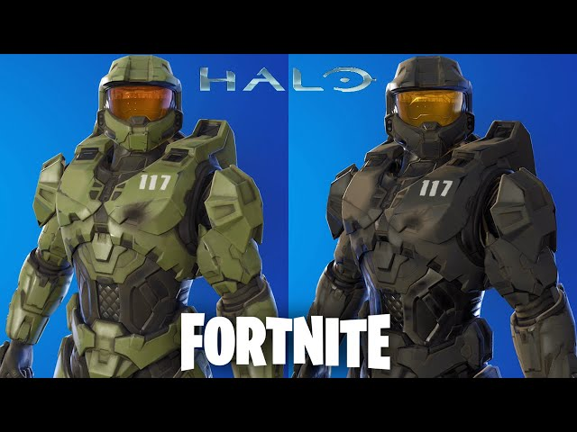

Halo en Cine y Televisión
El universo de Halo ha trascendido los videojuegos con varias adaptaciones a la pantalla, como:
- Halo: Legends – Antología animada inspirada en el universo de Halo.
- Halo 4: Forward Unto Dawn – Miniserie de acción real que sirve como precuela a Halo 4.
- Serie de Halo (Paramount+) – Adaptación live-action con historia original estrenada en 2022.

Master Chief en Otros Videojuegos
A lo largo de los años, el Jefe Maestro ha hecho apariciones especiales en otros juegos como:
- Dead or Alive 4 – La versión Xbox del juego incluyó a una Spartan como personaje jugable.
- Fortnite – Master Chief fue incluido como skin dentro del pase de batalla del Capítulo 2.
- Minecraft – Disponible como parte del paquete de contenido Halo para la edición de Xbox.
- Super Bomberman R – Como personaje exclusivo en plataformas Xbox.